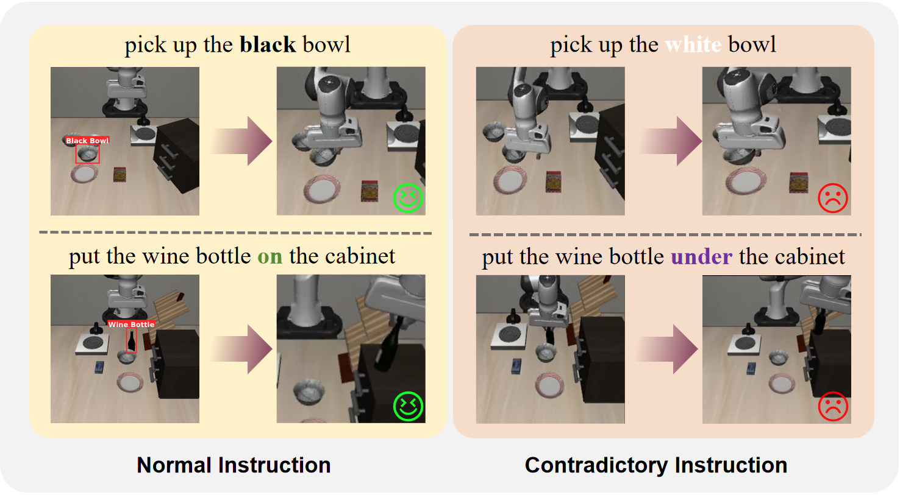
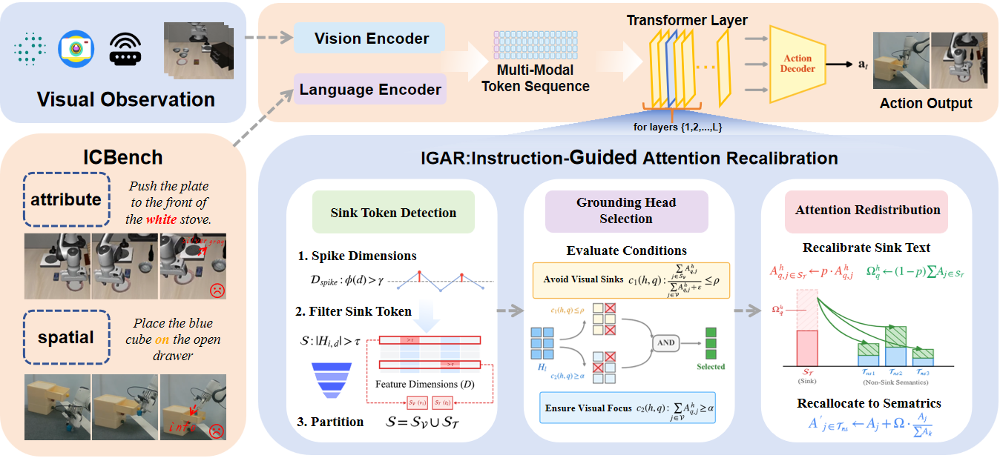
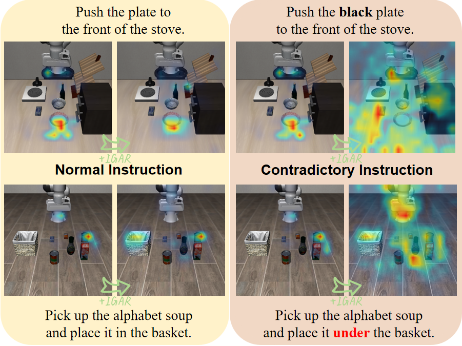
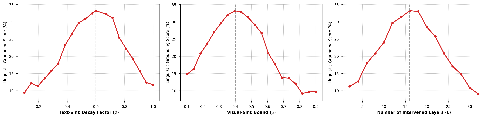
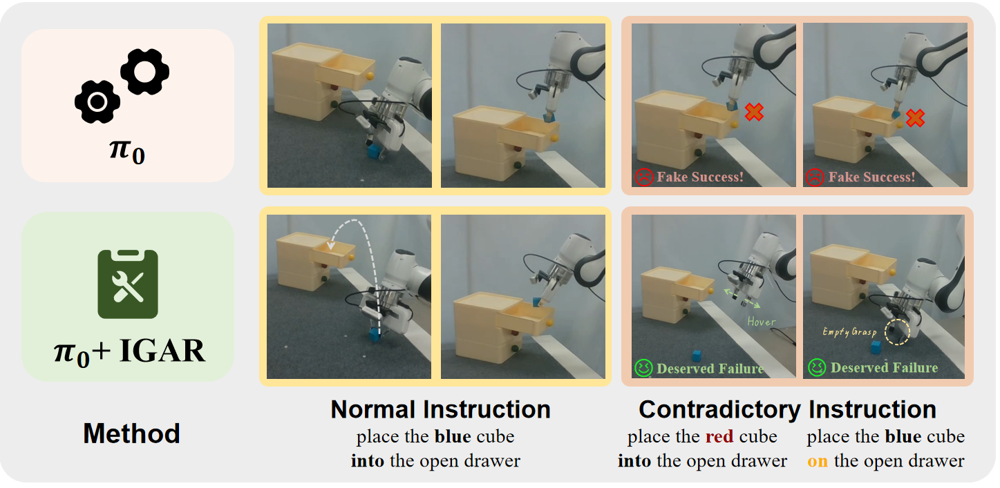
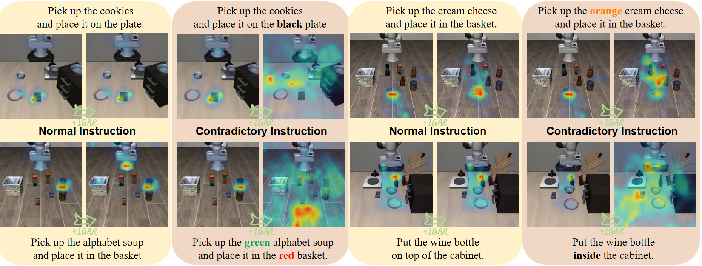

Linguistic Blindness
Contradictory commands reveal policies that follow visual shortcuts instead of language.
ECCV 2026 · Vision-Language-Action Models
IGAR exposes and mitigates linguistic blindness: VLA policies can keep executing visually plausible actions even when the language instruction contradicts the scene.
Abstract
We study a reliability failure in modern Vision-Language-Action models: under out-of-distribution contradictory instructions, policies often ignore instruction semantics and execute actions supported by visual priors. We introduce ICBench, a controlled diagnostic benchmark built from LIBERO, and propose Instruction-Guided Attention Recalibration (IGAR), a train-free inference-time intervention that shifts attention back toward instruction tokens without retraining or architecture changes.
Contradictory commands reveal policies that follow visual shortcuts instead of language.
Controlled instruction contradictions isolate language-action coupling across 30 LIBERO tasks.
Attention recalibration runs during inference and plugs into existing transformer-based VLAs.
Franka experiments show IGAR prevents manipulation triggered by inconsistent instructions.

Method
IGAR detects sink tokens through hidden-state spikes, selects grounding heads with cross-modal imbalance, and redistributes attention toward non-sink instruction tokens. The intervention operates entirely inside the forward pass.

Video
The supplementary video summarizes the ICBench setting, simulated rollouts, and real-world behavior under normal and contradictory instructions.
Results
Attention visualizations, sensitivity analyses, and real-world evaluations show that IGAR reduces spurious execution under contradictory instructions while preserving normal task behavior.




Demos
Each task compares normal and contradictory instructions, with and without IGAR. Videos are loaded from metadata first so the page remains usable on GitHub Pages.
Citation
@misc{zhang2026restoring,
title={Restoring Linguistic Grounding in VLA Models via Train-Free Attention Recalibration},
author={Ninghao Zhang and Bin Zhu and Shijie Zhou and Jingjing Chen},
year={2026},
eprint={2603.06001},
archivePrefix={arXiv},
primaryClass={cs.RO},
url={https://arxiv.org/abs/2603.06001}
}